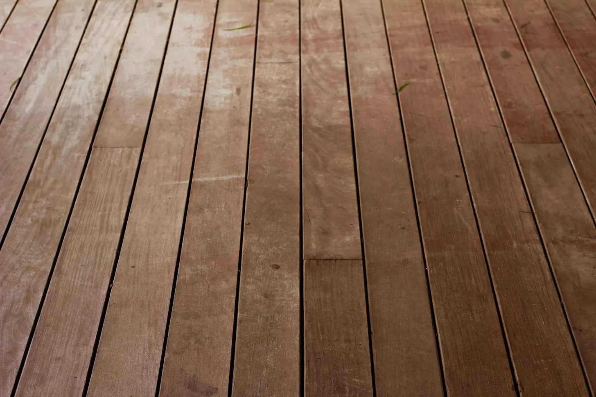

처음에는 쥐가 벽을 갉아먹는 듯한 부드러운 긁는 소리가 들렸다. 그러다 점점 더 커지고, 더욱더 집요해졌다. 마치 마룻바닥 아래에서 필사적으로 탈출하려는 듯 나무에 손톱이 긁히는 소리였다. 나는 심장이 갈비뼈에 쿵쾅거리는 소리에 얼어붙었고, 책이 손아귀에서 미끄러져 떨어졌다.
오래된 집은 불안한 듯 삐걱거리고 신음하며 불협화음을 냈다. 흔들리는 촛불 아래 그림자가 춤을 추었고, 길게 늘어진 그림자는 마치 나를 향해 손을 뻗는 것 같았다. 차가운 바람이 방 안으로 스며들어와 내 살갗을 얼어붙게 했다. 나는 안락의자에 더 깊이 파묻혀 담요를 움켜쥐고 온기를 느끼려 애썼다.
긁는 소리는 더욱 강해져 짐승의 으르렁거리는 소리로 변했다. 그것은 마치 척추를 타고 기어오르는 듯했고, 원초적인 공포가 뼛속까지 스며드는 듯했다. 마룻바닥이 내 발밑에서 진동했고, 그 불길한 떨림은 방 전체에 전율을 일으켰다.
마룻바닥 아래에서 짐승 같은 목소리가 희미하게 들려왔다. 고통과 영원한 어둠에 대한 약속을 속삭이는 듯했다. 그 목소리는 내 정신 속으로 스며들었고, 얼음처럼 차가운 촉수가 내 온전한 정신을 감싸는 듯했다.
나는 여기에 더 이상 있을 수 없었다. 반드시 나가야 했다. 나는 허둥지둥 일어서다가 촛불을 넘어뜨렸다. 어둠이 방을 뒤덮었고, 숨 막힐 듯한 장막은 공포를 더욱 증폭시켰다. 나는 문을 더듬어 찾았고, 손가락이 차가운 금속 손잡이에 닿았다.
나는 문을 활짝 열고 복도로 비틀거리며 나왔다. 뒤에서는 여전히 긁는 소리와 으르렁거리는 소리가 메아리쳤다. 나는 현관문을 향해 달려갔고, 폐는 고통으로 불타는 듯했다. 집이 마치 나에게 손을 뻗는 듯했고, 그림자가 내 발꿈치에 달라붙는 것 같았다.
나는 현관문을 박차고 나와 밤공기 속으로 뛰어들어 숨을 헐떡였다. 오래된 집이 내 뒤에 우뚝 서 있었고, 창문은 기이한 빛을 발했다. 나는 뒤돌아보지 않고 달렸고, 공포가 나의 질주에 불을 지폈다.
나는 달빛이 세상을 비추는 숲 가장자리에 도착할 때까지 멈추지 않고 달렸다. 나는 땅에 쓰러졌고, 온몸은 피로와 공포로 떨렸다. 나는 그 집으로, 마룻바닥 아래 도사리고 있는 공포로 다시 돌아갈 수 없다는 것을 알았다.
나는 어둠 속에 홀로 남았고, 보이지 않는 포식자에게 쫓기는 먹잇감이었다. 나는 집에서 탈출했지만, 공포는 여전히 남아 내 꿈을 영원히 괴롭힐 그림자가 되었다.
The scratching began softly at first, like a rat gnawing at the walls. Then it grew louder, more insistent. Nails on wood, a desperate plea for escape from beneath the floorboards. I froze, the book slipping from my grasp as my heartbeat pounded against my ribs.
The old house creaked and groaned, a symphony of unease. Shadows danced in the flickering candlelight, their elongated fingers reaching for me. A cold draft slithered through the room, chilling my skin. I huddled deeper into the armchair, clutching a throw blanket for warmth and comfort.
The scratching intensified, morphing into a guttural growl. It clawed its way up my spine, a primal terror seeping into my bones. The floorboards vibrated beneath my feet, a warning tremor that sent shivers through the room.
A guttural voice rasped from beneath the floor, its words barely discernible. It whispered promises of pain, of eternal darkness. The voice slithered into my mind, its icy tendrils wrapping around my sanity.
I couldn’t stay here. I had to get out. I scrambled to my feet, knocking over the candle in my haste. Darkness engulfed the room, a suffocating shroud that amplified the terror. I fumbled for the door, my fingers brushing against the cold metal doorknob.
I yanked the door open and stumbled into the hallway, the scratching and growling echoing behind me. I raced towards the front door, my lungs burning with the effort. The house seemed to reach out, its shadows clinging to my heels.
I burst through the front door and into the night, gasping for air. The old house loomed behind me, its windows glowing with an eerie light. I ran, never looking back, the terror fueling my flight.
I didn’t stop running until I reached the edge of the woods, where the moonlight bathed the world in an ethereal glow. I collapsed onto the ground, my body trembling with exhaustion and fear. I knew I couldn’t go back to that house, to the horrors that lurked beneath the floorboards.
I was alone in the darkness, a prey hunted by unseen predators. I had escaped the house, but the terror lingered, a shadow that would forever haunt my dreams.
처음에는 살짝 긁는 소리가 났는데 점점 커졌어요. 마치 나무에 손톱을 긁는 소리 같았어요. 저는 책 읽는 것을 멈췄고 심장이 빨리 뛰었어요.
오래된 집에서 소리가 났어요. 촛불에 비친 그림자가 움직였어요. 차가운 바람이 방으로 불어왔어요. 저는 담요를 꽉 끌어당겼어요.
긁는 소리가 으르렁거리는 소리로 바뀌었어요. 저는 속으로 너무 무서웠어요. 바닥이 조금 흔들렸어요.
바닥 아래에서 낮은 목소리가 들렸어요. 나쁜 것들에 대해 말했어요. 그 목소리 때문에 저는 미쳐버릴 것 같았어요.
저는 나가야만 했어요. 저는 벌떡 일어나 문으로 달려갔어요. 촛불이 넘어지고 모든 것이 어두워졌어요.
저는 문을 열고 복도로 뛰어나갔어요. 긁는 소리와 으르렁거리는 소리가 나를 따라왔어요. 저는 현관문으로 달려갔어요.
저는 밤에 밖으로 나와 달려갔어요. 뒤에 있는 집이 무서워 보였어요. 저는 멈추지 않고 계속 달렸어요.
저는 숲에 도착할 때까지 달렸어요. 저는 땅에 쓰러졌어요. 피곤하고 무서웠어요. 저는 그 집에 다시는 돌아갈 수 없다는 걸 알았어요.
저는 어둠 속에 혼자였어요. 보이지 않는 것들이 두려웠어요. 저는 도망쳤지만, 여전히 무서웠어요.
A scratching sound started soft, then got louder. Like nails on wood. I stopped reading, my heart beat fast.
The old house made noises. Shadows moved in the candlelight. A cold wind blew through the room. I pulled the blanket tight.
The scratching turned into a growl. It scared me deep inside. The floor shook a little.
A low voice came from under the floor. It talked about bad things. The voice made me feel crazy.
I had to leave. I jumped up and ran for the door. The candle fell, and everything went dark.
I opened the door and ran into the hall. The scratching and growling followed me. I ran to the front door.
I ran outside into the night. The house looked scary behind me. I didn’t stop running.
I ran until I got to the woods. I fell to the ground, tired and scared. I knew I couldn’t go back to that house.
I was alone in the dark, scared of what I couldn’t see. I had run away, but I was still scared.